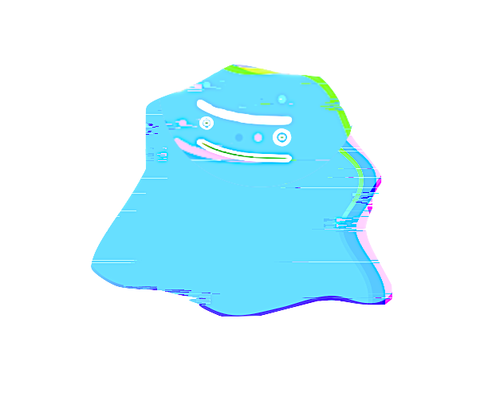

grainulator
Research that compiles
Evidence-tracked research sprints for Claude Code. Ask any question, get a decision-ready brief. Open source, zero dependencies, MIT licensed.

Evidence-tracked research sprints for Claude Code. Ask any question, get a decision-ready brief. Open source, zero dependencies, MIT licensed.